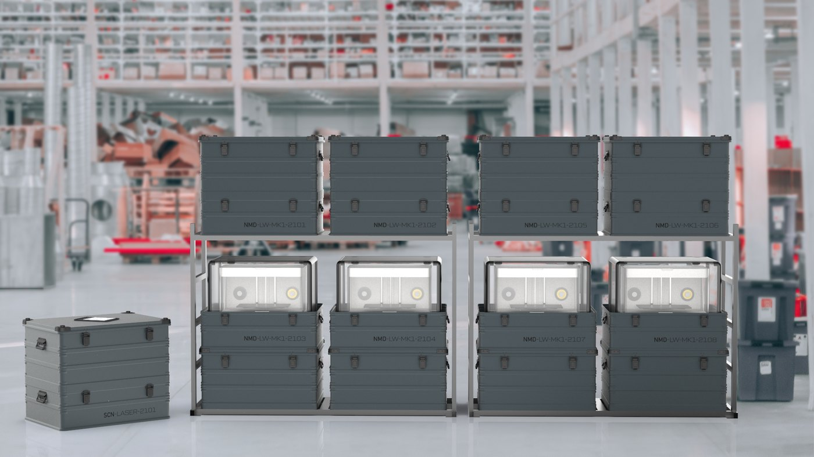
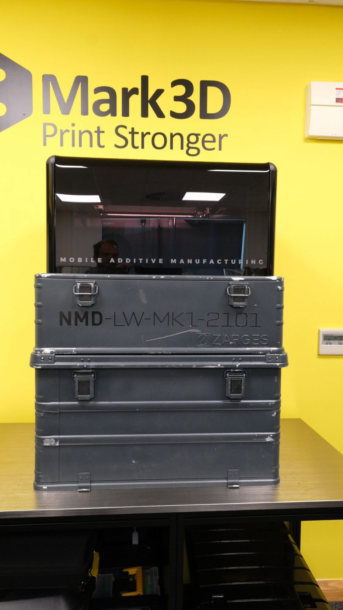

News & Insights

and to print as many of its own parts as it can
The customer story "Portable 3D Printing is a reality as the Mark Two goes mobile" from Mark3D, a Markforged reseller in Europe, describes how Fieldmade built the Nomad® LW around a Markforged Mark Two so that printing can move with the troops.
"We have a number of Markforged machines ourselves, so this made our decision to base the Nomad® LW project around the Markforged machine easy. Having to recommend a machine that's going to travel in the back of trucks or put in shipping containers and then airfreighted somewhere in the world wasn't really a hard decision."
Svein Hjelmtveit · CTO, Fieldmade AS (from the Mark3D customer story)The challenge
Taking 3D printing into the field, especially for the military
The advantages of additive manufacturing grow clearer every day, and engineers increasingly want to take their printers into the field. The requirement for in-field printing began as a military research project and had existed for some time. Fieldmade, the Norwegian logistics and supply chain specialist, set out to solve the challenge of mobilising 3D printing, in particular for military applications.
Deployment requires high print success, ultra-tough parts and great machine reliability. A Markforged user since 2016, and with exactly that experience of its own machines, Fieldmade's engineering team wrote a specification for an autonomous and sustainable in-field printing solution based on a Mark Two.
Development
Printing the system on its own Markforged machines
Owning its own machines brought two more benefits, says Svein Hjelmtveit. The team could quickly prototype the whole solution around its own machine and test it thoroughly. And knowing the final product had to withstand rough treatment, it printed as many parts in Onyx as it could. "It was much faster and 10x cheaper than machining aluminium. Markforged prints are tough and more than man enough for this job."
"In a strange kind of way our Markforged machines are self-replicating. Anything that could be 3D printed, either out of Onyx or as a composite, has been done."

Field trials
Arctic cold, desert heat, moving vehicles and ships: 12 months of testing
The final specification drew on input from a wide range of end users and data from field trials. It was signed off in 2018, when production of the Nomad® LW and other products in the Nomad range began. Initial deliveries were six units placed in racks, with final set-up at the destination.
It quickly became clear that truly portable printing was also needed, so the engineering team added more functionality: working without power, a stabilising system for mobile printing over rugged terrain, and lockable wheels on the bottom of an even tougher travel case.
The first mobile printers quickly found their way into the hands of special forces and were tested in a wide range of conditions for 12 months, from extreme cold in the Nordics to sweltering deserts and a number of places Fieldmade will never know. Further testing took place in moving vehicles, on ships and in field exercises.
Specification
How the Nomad® LW is built
Today the Nomad® LW is used across many applications and continues to be refined. It comes with specially configured sustainment packs holding enough materials and consumables to print for three months, along with all major spares; when units return to base, the packs are replenished for the next trip.
Per the published specification: a ruggedized transport case, integrated transport stabilization, a closed cell for an ideal print environment, an integrated uninterrupted power supply, field serviceability, a weight under 70 kg and an 800 × 600 mm footprint. Build volume is 320 × 132 × 154 mm, with a 100 μm default and 200 μm maximum layer height. Plastics are Onyx, Nylon White, P-PLA and S-TPU; fibers are carbon fiber, fiberglass, Kevlar® and HSHT fiberglass; software comes in cloud and fully offline versions.
The Nomad® LW has been released across the majority of Europe in collaboration with the Mark3D Group of companies.

Assess in-field and mobile printing
If your unit needs to make spares and tools in the field or on the move, Markforged engineers can assess printers and materials against your actual parts and deployment conditions, and arrange a demonstration in Taiwan, Hong Kong or Vietnam.
Contact usSources
- Mark3D (Markforged reseller in Europe) customer story: Portable 3D Printing is a reality as the Mark Two goes mobile (published 2022-11-01, updated 2023-06-15). Specifications, figures and quotes from that page
https://www.mark3d.com/en/portable-3d-printing-is-a-reality-as-the-mark-two-goes-mobile/ - Mark3D German version: Mit dem Mark Two wird der mobile 3D-Druck zur Realität
https://www.mark3d.com/de/mit-dem-mark-two-wird-der-mobile-3d-druck-zur-realitaet/ - Images: Mark3D customer story
Compiled by the Markforged Greater China & Vietnam team.
Back to the Media Hub · www.markforged.tw